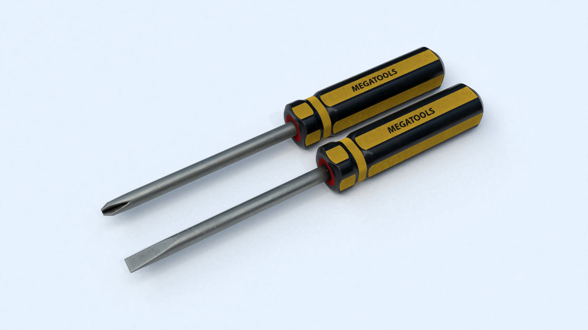
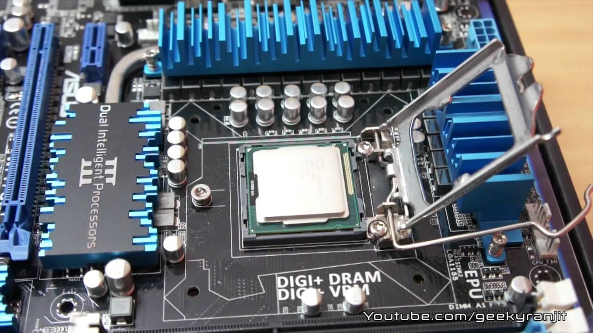
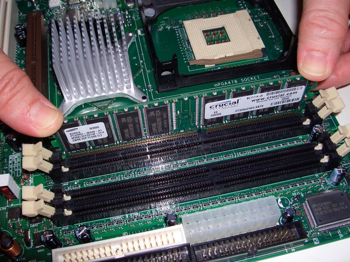
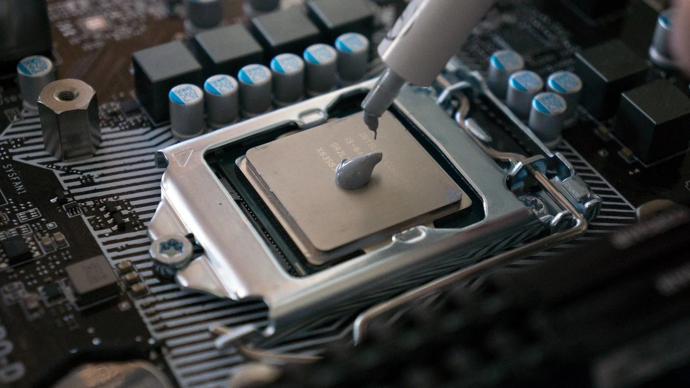

How to Build a Computer:
A Step by Step Guide
Table of Contents
Necessary tools
-
Screwdrivers (Phillips head and Flat head)
 -
ESD Strap (if unavailable, there are alternatives that will be talked about.)

-
Large, Open Table

Install Standoffs
Many modern cases have the standoffs already preinstalled, but just in case they don't, you'll need to install the standoffs in the specified areas on the case for your motherboard.
Here is a graph that shows where to install the standoffs, depending on the type of motherboard you have.

Install I/O Shield
Some modern motherboards have I/O Shields, but if they don't, they are very easy to install.
A Preinstalled I/O Shield
All you have to do is line up the I/O shield where it needs to be installed, from inside the case, and push in the 4 corners until it clicks in. The easiest way to do this is to push in the top half first, then the bottom.
A normal I/O Shield Installation.
Prepare the Motherboard
-
Install the CPU
First unlock the latch and pull it as far back as you can so that you can place the CPU in its slot. Once you do that, carefully grab the CPU by its corners, align the triangle at the in the bottom left corner of the CPU with the triangle on the motherboard and carefully place the CPU in its slot. After you’ve placed it in the slot, slowly lower the latch back into place and re-lock it.
CPU in slot w/ unlocked latch
-
Install the RAM
Be sure to install the RAM in the correct slot(s). Check the system board documentation for more details. Align the memory before inserting, and do not force the module in place. Most memory is keyed to prevent it from being installed backwards or in incompatible slots. Once in place, push down on the RAM from the center of it with your thumbs until it fully locks into place.
RAM Installation
-
Apply Thermal Paste
Thermal paste is used to absorb heat coming from the CPU so that it does not get overheated. When applying thermal paste, use only a small dot of it. If you use more, it might spread and fall onto the motherboard, damaging it.
Correct Amount of Thermal Paste
-
Install the heat sink / cooler
You need to make sure the words on the heat sink are facing you. Push each of the corners in and then twist them and make sure they lock. Be careful not to bend the pins while installing it, or else it will not properly keep the CPU cool. After that, install the heat sink’s power cable into the correct slot.
If you have an AIO (All in one) Cooler, it will be a little bit more difficult to install. I recommend following specific videos for the cooler you have.

Installing a Heat Sink
Install Motherboard
Handle the motherboard by the now installed heat sink.
Line up the motherboard with the I/O Panels and push it in at a slight angle until it is completely in. Once you do that, check to make sure it aligns with the risers. Then screw the motherboard in, but only tighten it to where you start to feel slight resistance. If you tighten it too much, you could bend or damage the motherboard.
Also be careful not to scratch the bottom of the motherboard, as this could ruin it.

Motherboard properly installed in the case.
Install the Hard Drives / Solid State Drives
Now you will be installing the devices that you have for your computer, such as SSDs (solid state drives) and HDDs (hard disk drives)
This installation is for 2.5" and 3.5" drives. M.2 Drives have to be installed differently.
There will be slots available for these drives on the inside of the case. All you have to do is slide the drive in the slots and lock them in.
Installing the Hard Drive
Install the Power Supply
When installing the power supply, make sure no cables are getting in the way and place the power supply in the case in its correct slot. The fan should be generally be facing the bottom of the case so that the computer does not get overheated. Once it is lined up with the case, screw in the screws so that it is secured.
Installing the Power Supply
Connect Case Fans / Front Panel
Once the power supply is installed, you will now connect the case fan and front panel connections. You can check your motherboard documentation to figure out where the connectors are. Fans have two types of connectors, 3 pin and 4 pin. 3 pin connectors are only controlled on/off. 4 pin connectors are controlled on/off and controlled speed.
You need to be very careful when starting this step because if you try to connect the front panel incorrectly, it could shock the motherboard and cause it to fail. Be sure to check your documentation to connect the cables properly.
Connecting Front Panel
Install the Graphics Card
Installing the graphics card will be one of the last things you do while building your computer. It's a very simple process.
First, unscrew 1 or 2 of the platings on the back near the PCIe slot where the graphics card will be slotted, depending on how many your card needs.
After that, all you need to do is line up your graphics card with the slot and firmly push it in from boths ends. Once it clicks in all the way, screw it in where you removed the plating.
Installing Graphics Card
Connect Power Supply Cables
A typical ATX power supply has two connectors for the motherboard, an 8-pin connector, which provides power to the CPU, and the main power connector which is a 24-pin connector. The power supply connector typically has a clasp on it to prevent being inserted incorrectly. You will have to exert a good amount of pressure on it so that it plugs in correctly, so do not be afraid to do so. All of the pins should be locked into the slots if installed correctly.
Now you are going to give the devices that you installed earlier power. First you’re going to connect the HDDs/SSDs. Connect SATA cables to the motherboard and to all the devices you are installing. Then connect the SATA power connect from the power supply to the devices.
Computer w/ all cables connected.
Cable Management
Your final step to building a computer will be cable management. This step is not only for presentation, but also to help with thermodynamics. Proper cable management will help keep computer temperatures at a low and keep the computer running smoothly. If the cables were scattered about in the case, the components in your computer could overheat and it could come into contact with your fans.
A good way to work on cable management is to buy a variety of cable management hardware. Multiple manufacturers produce vertical and horizontal managers, in different styles. Make sure you grab a good selection of multiple sizes of patch cords.
Many computer cases nowadays come with grommits and other useful cable management things to help make this process much easier.
Good Cable Management.